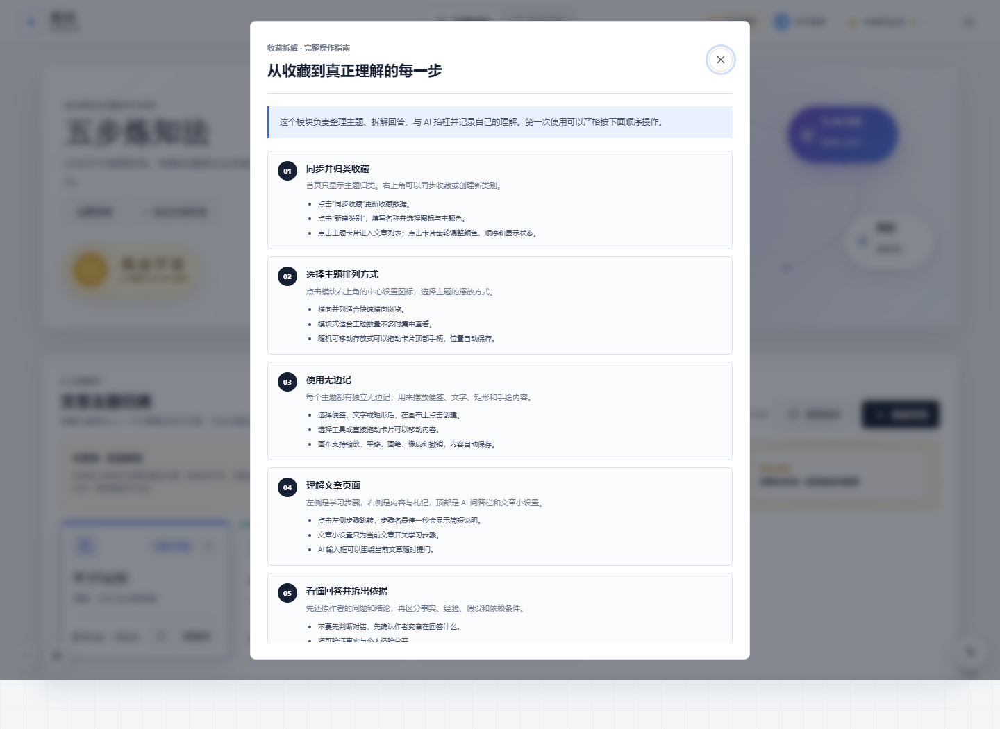
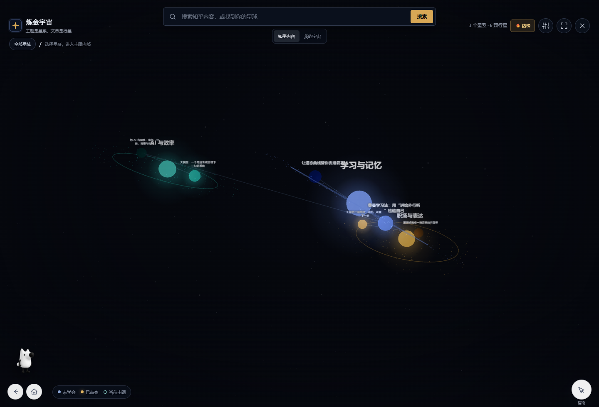
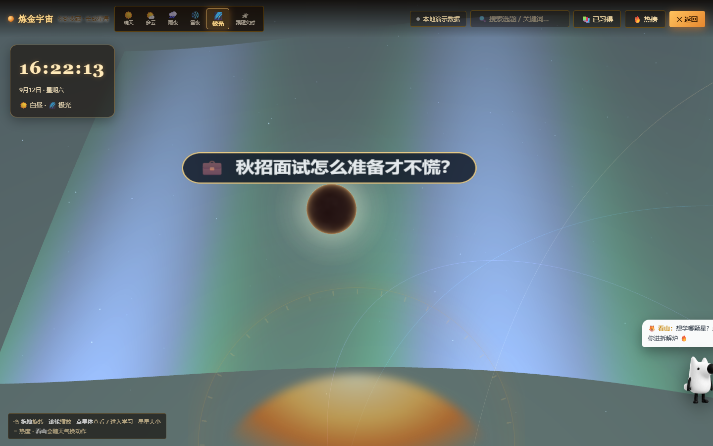

用户问题真实
收藏门槛极低、回看成本很高。用户获得的是“以后会看”的安全感， 而不是稳定、可调用的知识。
知乎黑客松 2026 · 知识炼金场
把知乎收藏，炼成自己的回答
炼知把用户收藏夹里的优质回答，变成可拆解、可验证、可连接、可输出的个人知识资产。 它不是第二个收藏夹，而是连接知乎内容消费、主动学习与社区创作的一条知识加工链。
01 / 评审摘要
炼知的核心命题不是“帮用户整理更多内容”，而是解决知乎社区中一个高频而长期存在的问题： 用户收藏了大量好回答，却没有把它们转化为自己的能力、表达和行动。
让知乎收藏完成一次身份转换：从沉睡的内容库存， 变成用户可以理解、验证、迁移并重新发布的个人知识资产。
炼知 ReKnow 产品使命
收藏门槛极低、回看成本很高。用户获得的是“以后会看”的安全感， 而不是稳定、可调用的知识。
用第一性原理拆出事实、假设、推导与边界，再用 AI 抬杠检验理解， 最后回到真实场景。
主题是星系、文章是行星、学会即点亮。知识进度从抽象百分比变成 可观察、可探索的个人宇宙。
原文、收藏、学习、回答仍在知乎生态内流转。炼知只组织用户的学习结果， 不截断内容来源与创作回流。
02 / 问题定义
缺失工序有三个：没有主动重建，缺少压力测试，也没有面向输出的知识结构。 炼知针对的不是“信息太多”，而是“信息无法变成能力”。
03 / 核心创作思路
产品围绕“主动重建而非被动阅读”设计。 每一步都对应一种认知动作，也都有清晰的完成标准。
从知乎收藏或系统推荐中确定今天真正要解决的问题。
区分结论、事实、经验、隐含假设、推导链与适用边界。
让 AI 抓住用户原话中的漏洞，用边界、反例和前提逼问理解。
把知识卡、概念、观点和关系连接成可重建的个人结构。
形成回答草稿、行动方案或表达材料，再把结果带回知乎。
不把“看过”当成“学会”。用户必须用自己的语言重建因果链， 才能标记为已学会。
AI 不替用户写答案，而是指出模糊词、隐藏前提和失效场景， 将“看懂”变成经得起追问的理解。
每个知识点最终都要落到真实任务、生活情境或输出目标， 避免知识只停留在笔记中。
04 / 产品结构
收藏进入主题归类后，用户可以逐篇拆解、记录札记、与 AI 对话、 使用无边记建立结构，并用“未学会 / 已学会”管理真实学习状态。


3D 宇宙不是装饰背景，而是用户知识状态的空间表达。 用户可以搜索知乎内容、进入主题星系、双击恒星调整星系、 在星球详情中继续学习或同步学习状态。
05 / 用户路径
06 / 整体技术实现
技术方案遵循一条清晰边界：浏览器只负责交互与状态表达， 所有密钥、长期凭证和敏感数据均由服务端管理。
主题是知识星系，文章是行星。文章生命周期包含未学会和已学会两类核心状态， 已学会状态同时驱动文章界面、列表筛选和宇宙亮度。
文章使用唯一 `learned` 状态作为真源。完成学习后自动点亮， 星球取消点亮会反向把文章同步为未学会，避免双状态漂移。
中心设置保存全局规则，区域小设置保存局部覆盖。 用户可调整学习步骤、拆解深度、AI 语气、主题排列和宇宙表现。
前端不持有知乎 token 或模型密钥；服务端使用最小授权。 产品保存索引、摘要和用户生成结构，不替代知乎原文。
index.html骨架、双模块入口、设置与阅读界面app.js收藏归类、学习状态、步骤、笔记与设置universe.js星系、行星、镜头、星点与状态映射oauth.js / api.js授权状态、收藏同步和知乎数据适配server.jsOAuth、OpenAPI、AI 代理、SSE 与 WebSocket新版/src文章、卡片、概念、项目、输出和报告重构验证07 / 与知乎社区生态的契合
炼知不建立封闭内容池，也不截流原创。它把用户已经收藏的知乎内容， 加工成用户能带走的理解，再把新的表达回流知乎。
将被收藏后长期沉睡的高质量回答重新纳入学习、讨论和创作场景， 延长优质内容的价值周期。
通过拆解、追问、连接和输出，让收藏从“拥有内容”变成 “获得能力”，提高回访和长期留存。
学习结果保留来源索引，用户可以在理解的基础上形成回答草稿， 增加新的观点与经验，而不是简单洗稿。
用户从阅读者变成提问者、回答者和分享者， 让知乎的内容消费与内容生产形成更强的正反馈。
08 / 场景价值
批量分类、快速摘要、决定保留与归档，减少囤积焦虑。
从卡片和暗星中继续未完成内容，不需要重新决定学什么。
围绕主题建立概念连接，优先回看尚未学会的知识点。
把知识卡组织成观点、证据与行动，形成可继续编辑的草稿。
以项目目标筛选收藏，形成资料、概念和行动之间的联系。
围绕共同主题共建知识地图，并共享个人知识星系。
09 / 创作历程
项目不是一次成型的，而是在“产品复杂度、操作清晰度、状态准确性和技术边界” 之间持续取舍、验证和重构。
收藏工具容易显得像普通清单。项目开始重做视觉、模块层级和首次使用说明， 让用户先理解“为什么学”，再操作“怎么学”。
结果：形成清晰的收藏拆解工作台。单纯列表无法表达长期积累。项目把主题映射为星系、文章映射为行星， 并加入炼金炉、关系链、昼夜、天气、原文批注和看山陪伴。
结果：学习进度第一次成为可探索的空间。原有代码把所有功能压在少数超大文件中，且设置、步骤和宇宙操作过多。 随后拆出明确的视图、中心设置与区域小设置，并完成性能、覆盖层和移动端修正。
结果：功能保留，操作逻辑与视觉层级更稳定。v7 接入知乎开放平台、DeepSeek/知乎直答双通道、多人实时房间、 原文查询与批注。另一条 v8 支线验证了账户、云端同步、炼金配方和无限白板。
结果：从静态 Demo 变成可真实运行的知识服务原型。React 重构版把文章进一步拆为知识卡、概念、项目、连接和输出， 并解决本地双击打开、原文入口和自动拆解问题。 当前宇宙版则继续完善登录推荐态、真实收藏态和文章-星球状态同步。
结果：产品从“文章管理”走向“个人知识网络”。10 / 关键问题与解法
11 / 实施路线
收藏归类、五步学习、AI 抬杠、图谱、3D 宇宙、原文批注、移动端与离线运行。
知乎 OpenAPI、用户级 OAuth 收藏链、推荐态与真实收藏态、文章与星球同步、AI 双模型。
云端同步、炼金配方、按主题复习、自定义模型、私有与共建知识星系。
回答草稿、内容素材、多人学习房间、社区主题榜单与知乎发布回流。
桌面与移动端已验证，无横向溢出与运行异常。
搜索、热榜、回答、收藏与原文接口已接入并缓存。
问答、抬杠、SSE 流式回答和 WebSocket 房间已通过回归。
OAuth 与用户收藏读取链路已准备，等待官方正式开放对应 scope。
12 / 真实产品证据
